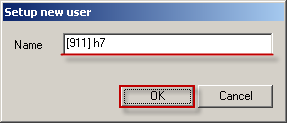

| project by heaven7 |
911
Hello, and welcome to heaven7's homepage and "911" const group Web-page!
Table of Contents |
"911" is a const party group, currently a member of Ventrue clan, Airin, RuOFF. We started as a project of PACCBET clan (eng.: SUNRISE) in September 2010. Our primary goals are:
| Role | Member | Remarks | |
|---|---|---|---|
| Primary | Secondary | ||
| Tank | ХхМакСхХ, Max | ||
| DD-1 | Funneral, Sergey | ||
| DD-2 | ShooIIer, Ivan | ||
| DD-3 | Blunti, Valera | ||
| BD | BladeShift, Oleg | AJIEHb, Alexander | |
| SWS/WS | Кузища, Angelika | ||
| BP | НаноБот, Ilya | Laik, Sergey | |
| Healer | |||
| Buffer | Dreadlock, Dima | heaven7, Vasya | |
Every active "911" member obtains "911" points for his activity. "911" members receive these points based on their activity reports. Reports should be send to "911" leader, heaven7, every two weeks (during siege weekend). You can see "911" ranking below.
| Rank | Nick | "911" points | Remarks |
|---|---|---|---|
| 1 | ХхМакСхХ | 1,5kk | "911α" 1st deputy |
| 2 | Funneral | 500k | "911α" 2nd deputy |
| 3 | Blunti | 300k |
One of the most important parts of "911" group work is clan development. We're looking for skilled, experienced and mannered players or those who are actively training to become ones. However, we invite everyone to join our team (clan) for trial period. During this period a member can be kicked out from our team (clan) without a notice for rude/inadequate behaviour, poor online, begging, cheating or swindling.
The list below shows our team (clan) recruiting progress describing clan development programs that were organized by our team members.
Program cost: 5 000 000 (five million) Adena
Program result: 4 980 CRP (four thousand nine hundred eighty clan reputation points), 8 loyal clan members
This recruiting program was organized by heaven7 and took place in РАССВЕТ clan from October 10, 2010 till November 10, 2010. During this month 39 players were invited to join РАССВЕТ's academy, 8 of them successfully graduated bringing 4980 CRP to the clan; 34 players were invited to join the РАССВЕТ clan, 8 of them had shown good performance and are expected to become loyal clan members. The program was stopped due to exhaustion of funds, weakening of the clan attractiveness due to the implementation of clan tax program. The program budget amounted to 5 000 000 Adena.
Click here to show/hide details
| Nickname | Entry LVL | Status | Date | Comment / Kick Out Reason |
|---|---|---|---|---|
| ACADEMY | ||||
| BloodTank90 | 610 | graduated | 10-17.10.10 | No graduate reward given |
| Merlin15rus | 650 | graduated | 28.10.10 | Alexander, 28; 650k payed |
| MrGrim | 610 | graduated | 01-07.11.10 | 610k payed |
| Piligrym | 510 | graduated | 22.10-02.11.10 | Mazila's twink; 500k payed |
| АцкийСатан | 650 | graduated | 27.10-02.11.10 | 650k payed |
| ЗлаяФея | 650 | graduated | 26-29.10.10 | 650k payed; АцкийСатан's twink |
| Нося | 650 | graduated | 24.10-06.11.10 | 650k payed; good performance |
| хххПАХАРЬххх | 650 | graduated | 24-28.10.10 | 650k payed |
| Biseptol | 450 | kicked out | 23.10-01.11.10 | poor online |
| bratok | 650 | kicked out | 02-27.11.10 | poor online; 12.11 will be away for 9 days |
| DARKZVER2 | 650 | kicked out | 19-20.10.10 | inadequate behaviour |
| Falmex | 650 | left | 03-04.11.10 | by own will |
| Fragruss | 650 | kicked out | 26.10-01.11.10 | poor online |
| FpyKToBbiu | 650 | left | 26-27.10.10 | by own will |
| halken | 650 | kicked out | 10-19.10.10 | poor online |
| HoBoky3He4aHka | 650 | kicked out | 01-08.11.10 | poor online |
| IIIPAM4IK | 650 | kicked out | 19-20.10.10 | poor online |
| iWraith | 650 | kicked out | 24.10-08.11.10 | poor online |
| KoNeWoD | 650 | kicked out | 22.10-01.11.10 | poor online |
| Nezi | 610 | kicked out | 27.10-08.11.10 | poor online |
| nononi | 650 | kicked out | 01-27.11.10 | poor online |
| Strannic | 650 | kicked out | 19.10-27.11.10 | poor online |
| subterra | 650 | kicked out | 19.10-01.11.10 | poor online |
| TheRabbels | 650 | kicked out | 10-19.10.10 | poor online |
| Абай | 650 | kicked out | 27.10-08.11.10 | poor online; 100k prepayed |
| Алексей74 | 650 | kicked out | 22.10-01.11.10 | poor online |
| Арая | 650 | kicked out | 18-27.10.10 | poor online |
| БишСцукоХиль | 530 | left | 18-21.10.10 | by own will |
| ВеджАнтиллес | 530 | left | 18-21.10.10 | by own will |
| КрейгУнШалах | 650 | kicked out | 20-27.10.10 | poor online |
| ЛовушкаКупидона | 650 | left | 01-25.11.10 | by own will; DarkRiders (10 lvl) AQ Twink |
| МагБури | 650 | kicked out | 19-27.10.10 | poor online |
| НакачаныйЭмо | 650 | kicked out | 27.10-08.11.10 | poor online |
| НЕБО | 650 | kicked out | 27.10-08.11.10 | poor online |
| СпидиГоньщик | 650 | left | 24-25.10.10 | by own will |
| Теомир | 650 | kicked out | 19-27.10.10 | poor online |
| ф4рр777 | 430 | left | 18-21.10.10 | by own will |
| Эльрона | 650 | kicked out | 19.10.10 | by own will; Арая's twink |
| Хаддар | 650 | left | 31.10.10 | by own will |
| MAIN | ||||
| 220Вольт | WK 44 | left | 02.11.10 | by own will |
| 777CameLL777 | HK 48 | kicked | 24.10-15.11.10 | poor online |
| Begrip | PW 46 | left | 19-22.10.10 | by own will |
| Controler | SB 44 | left | 24.10-07.11.10 | by own will |
| djsuslic666 | DA 43 | left | 24.10-24.11.10 | by own will |
| Gastat | BS 50 | kicked | 23.10-03.11.10 | poor performance |
| GlobalBas | DA 42 | kicked | 19.10-03.11.10 | poor performance |
| jagged | SB 42 | left | 02-03.11.10 | by own will |
| Jagokh | BH 40 | left | 24.10-14.11.10 | by own will |
| IMaximusI | AW 45 | left | 24-30.10.10 | weekend online only |
| Krumper | BD 45 | left | 25.10-10.11.10 | by own will, Dima, Tver, 21 |
| KRYT | BP 47 | kicked | 19.10-03.11.10 | poor performance |
| LORD3 | PS 45 | kicked | 25.10-15.11.10 | poor online; Anton, Moscow, 14, Dima's friend |
| npocToPP | PP 48 | kicked | 24.10-03.11.10 | poor performance |
| P0k6eu6a | AW 46 | left | 24-30.10.10 | by own will |
| Stimyl | SK 46 | left | 19-23.10.10 | by own will |
| Ustrius | WC 44 | kicked | 24.10-15.11.10 | poor online |
| xXxNagixXx | BS 40 | left | 24-30.10.10 | Zelim |
| Алчный | BH 44 | left | 21.10-01.11.10 | by own will |
| БогатыйДед | BH 45 | kicked | 01-15.11.10 | poor online |
| ЗЮСЯ | HK 43 | kicked | 24.10-15.11.10 | poor online |
| ЛАЛЭЙЛО | EE 40 | kicked | 24.10-15.11.10 | poor online |
| НеЗалью | SE 49 | kicked | 19.10-03.11.10 | [агресия] этоОснова's twink, not confirmed |
| РукаАда | DA 53 | kicked | 26.10-28.11.10 | poor online |
| AmatoryAW | AW 54 | left main | 26.10.10 | Alexey, Mazila's friend |
| iced | TK 55 | left main | 24.10.10 | |
| Mazila | EE 55 | left main | 21.10.10 | Jeka |
| Merlin15rus | PL 50 | moved | 01.10-24.11.10 | poor online; Alexander, 28; PACCBET academician |
| MrGrim | AW 40 | left main | 08.11.10 | PACCBET academician |
| Persen | WC 66 | left main | 24.10-21.11.10 | |
| suhov | DA 48 | left main | 24.10-21.11.10 | |
| tosh22 | AW 50 | left | 03.11.10 | |
| Ve1ser | AW 58 | left main | 02.11.10 | |
| АцкийСатан | WS 40 | moved | 02-24.11.10 | poor online |
Academy status: 8 graduated, 31 kicked/left
Total academy reward payed: 4,46kk
Total CRP gained: 4980
Current/Total CRP: 3061/13061
Program cost (estimated): 0 (zero) Adena
Program result: 6 clan members
This recruiting program was organized by heaven7 and took place in РАССВЕТ clan since November 11, 2010 till November 21, 2010. This was a clan recruiting program, candidates were invited to join the РАССВЕТ clan on "pay 100k tax per week" basis.
Click here to show/hide details
| Nickname | Entry LVL | Status | Date | Comment / Kick Out Reason |
|---|---|---|---|---|
| FusionEM | EE 46 | left | 13-23.11.10 | by own will |
| toolcon | PL 45 | kicked | 12.11.10 | poor online |
| Xenama | BS 40 | left | 13-19.11.10 | by own will |
| Крафтан | WS 41 | kicked | 11-24.11.10 | poor online |
| ПишерныйЗверь | WC 41 | kicked | 11.11.10 | poor online |
| Яг | TH 47 | kicked | 13.11.10 | poor online |
Program cost (estimated): 0 (zero) Adena
Program result: "911" core created successfully
This recruiting program was organized by heaven7 and took place in РАССВЕТ clan from April 1, 2011 till April 15, 2011. The goal was to invite future "911" group members. The program was stopped due to merge of РАССВЕТ, RealLords, Romanze into single clan project named Ventrue.
Click here to show/hide details
| Nickname | Entry LVL | Status | Date | Comment / Kick Out Reason |
|---|---|---|---|---|
| AJIEHb | BD 72 | existed | 22.3.11 | Alexander |
| Blunti | BH 65 | invited | 14.4.11 | Valera |
| ChemoChe | EE 72 | invited | 11.4.11 | |
| Funneral | BS 70 | invited | 2.4.11 | Sergey, Nikolaev |
| IWhiteQueenI | SB 71 | existed | 13.3.11 | Marina, Armavir, Krasnodar |
| KoSoy | BP 75 | left | 12.4.11 | left by own will |
| Laik | BP 72 | existed | 12.3.11 | Sergey |
| Rosina | BD 54 | invited | 3.4.11 | Lena |
| STAIL | DA 66 | invited | 4.4.11 | Igor |
| 77Кэлион77 | BS 74 | invited | 8.4.11 | Stanislavi Rachkovsky |
| гладАлкаш | GD 71 | invited | 9.4.11 | Alexey, Kolpino: poor online |
| Алхамончик | SK 75 | existed | 9.3.11 | Anatoliy, Shahty, Rostov |
| ДЕГГЕРман | PW 74 | existed | 9.3.11 | Farhad, Kazan: poor online |
| Кузища | WS 73 | invited | 25.4.11 | Angelika |
Statistical data about different events, quests, etc. is published here.
This event took place on Russian servers from November 16 till November 30, 2010. Event statistical data obtained by heaven7 is published below.
Click here to show/hide details
| Expences/Income Overview | ||
|---|---|---|
| Project cost: | 300 000 000 (three hundred million) Adena | |
| Real expenses: | 30 000 000 (thirty million) Adena | |
| Apiga: | 30 000 (thirty thousand) @ 4 000 (four thousand) Adena each | |
| Gold Apiga: | 4 000 (four hundred) @ 40 000 (forty thousand) Adena each | |
| Estimated income: | 500 000 000 (five hundred million) Adena | |
| APIGA Exchange (1437) | ||
| Face Type | 393 (27,35% / 0,25%) | 111,4kk |
| Hair Type | 373 (25,96% / 0.27%) | |
| Hair Color | 348 (24,22% / 0,29%) | |
| Vitality 10m | 321 (22,34% / 0,31%) | |
| SA 14 | 1 (0,07% / 100%) | 250,0kk |
| SA 15 | - | |
| SA 16 | 1 (0,07% / 100%) | |
| Dynasty A | - | |
| Dynasty W | - | |
| GOLD APIGA Exchange (217) | ||
| Gemstone S | 23x2 (10,60%) | 16,1kk |
| Wind/Earth Stone | 40/29 (31,80%) | 250,0kk (estimated) |
| Water/Fire Stone | 32/35 (30,88%) | |
| Divine/Dark Stone | 32/23 (25,35%) | |
Tired of all these endless clan/party projects with no ideology, no past and no future? Join "911" right now! It's easy! Contact me "heaven7 in game or ICQ  , MSN , we'll discuss all your questions/suggestions.
, MSN , we'll discuss all your questions/suggestions.
"911" clan was created on May 2, 2011 (server Airin) as a backup container for "911" group members. The goal is to provide fair backup for "911" members which can't join Ventrue clan for some reasons. "911" Terms and Conditions apply for clan members.
"911" clan requirements are (including but not limited to):
The following clan twinks were created for various clan purpuses/activities and can be treated as official "911" representatives:
Q: "911" - what does it mean and where it came from?
A: "911" stands for US emergency phone number "nine-one-one" and symbolizes desire to help people, fast reaction, reliability, solidarity in difficult situations. "911" came from lineage2.su server where irox (WC, me) met Reistlen (SE, MasterOFDragonS clan). Reistlen's title was "[MoD] Call 911". I really liked the idea and later, when I started to play on Franz as heaven7 for healer class, I used this title for myself. Some time later, on Airin, it became something more than just title for one single character.
Brief Instructions
Show/Hide Detailed Instructions
Create ventrilo user, use your clan nickname so everyone can recognize you:
Step1: Click on the "->" button near "User Name" selector
Step2: Click "New" button
Step3: Enter your name and click "OK"; remember to provide meaningful name so everyone can easily recognize who you are.

Step4: Select the name you've just created and click "OK"
Step1: Click on the "->" button near "Server" selector
Step2: Click "New" button
Step3: Enter any server name, for example "[PACCBET] 911" and click "OK"
Step4: Enter hostname kiev-app.dyndns.org in the "Hostname or IP" field; then enter port 51120 in the "Port number" field and click "OK" button
Step5: Connect to the server:
If you've entered connection settings correctly "MSG:Server is available. Press connect." message will appear. Press "Connect" button:
You will see yourself in a channel as shown on the first screenshot in next section
Setup/test sound and appearance (optional):
Step1:
Step2:
Step3:
Step4:
Contact me via ICQ  or MSN and ask to register user name and password for you. Provide your name, game nick and other information if prompted. Only registered users can access Server 2
or MSN and ask to register user name and password for you. Provide your name, game nick and other information if prompted. Only registered users can access Server 2
Follow the steps from previous section "Connecting to Primary Ventrilo Server (Server 1)", use kiev-app2.dyndns.org as server name (section 3.2.Step4), use your registered user name (section 3.1.Step3) and password (section 3.2.Step4) for authorization.
Alliances
Clans
Players
!["[MoD] Call 911"](images/Shot00064.jpg){kind=link}
{kind=link}